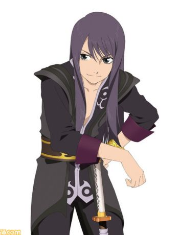

Yuri Lowell

Interpretado por: Kosuke Toriumi (JP) / Troy Baker/Grant George (EN)
El personaje principal del juego, un joven que vive en los barrios bajos de la capital, Zaphias, y ayuda a los necesitados. Es muy sarcástico y cínico, pero tiene una buena formación. Al igual que su amigo de la infancia Flynn, una vez fue un caballero, lo que le dio la libertad de hacer viajes cortos fuera de su ciudad natal, pero se retiró debido a su aversión al gobierno.
Ahora trabaja como guardaespaldas. Envidioso de Flynn, decide irse de la ciudad por su cuenta.
Después de los hechos que lo llevaron a ser encarcelado, conoce a la princesa Estelle y parten juntos para descubrir el mundo más allá de la capital, Zaphias.